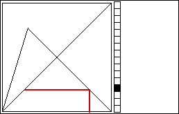

| Following the graphical iteration
path, we see some
of the paths appear to run over the same lines. Often, this is the effect of the nonzero
width of pixels. Near enough numerical values can fall in the same pixel. |
| To keep track
of this, we plot the histogram of the iterates.
|
| Divide the
vertical unit interval into some number of bins, one bin per pixel for example.
|
| Then every time an xi lands in a bin, we increment the counter of the number of points that have
landed in that bin. |
| Visually, we represent this by plotting another pixel to the right. |
|  |
| Click the picture to see the first few steps in constructing a histogram. |
| Here are some examples for the logistic map L(x) = s⋅x⋅(1 - x). Click each numner for the
graphical iteration and histogram pictures. |
|
| In some of these we see examples of cycles and
intermittency. |